Chapter 11.
HELICOPTER FLIGHT MANEUVERS
From the foregoing chapters in this handbook, it
should be obvious that the variable factors of wind, temperature, humidity,
gross wieght, structural differences of various helicopter models greatly
affect the operation of the helicopter. Even when flying the same model
helicopter, two flights are seldom exactly alike to the pilot because of
variation in wind and density altitude. Therefore, it is practically
impossible to prescribe helicopter attitudes for the performance of each
flight maneuver since this handbook should generally apply to all
helicopters having the characteristics set forth on page 1. Attitudes,
airspeeds, altitudes, and power settings will vary to suit the weather, the
particular helicopter, and the loading. For example, on a day with a 20-
MPH wind and a 1,000-foot density altitude, a certain nose-low attitude
and power setting will be required to hover and to initiate a departure
from a hover to commence a normal takeoff; the following day, with a
no-wind condition and a 2,500-foot density altitude, both the nose attitude
and the power setting for hovering and initiating a departure from the
hover may differ considerably in degree from the previous day. Obviously,
then, it would be impossible for the handbook to outline a specific nose
attitude and power setting for departure from a hover. Therefore, this
chapter does not detail each and every attitude of a helicopter in the
various flight maneuvers, nor each and every move a pilot must make in
order to perform a given maneuver.
VERTICAL TAKEOFF TO A HOVER
A vertical takeoff (or takeoff to a hover) is a
maneuver in which the helicopter is raised vertically from the surface to
the normal hovering altitude with a minimum of lateral and/or fore and aft
movement.
TECHNIQUE:
1. Head the helicopter into the wind, if possible.
2. Place the cyclic stick in the neutral posistion.
3. Be sure that the collecive pitch stick is in the
full down position.
4. Increase the throttle smoothly to obtain and
maintain proper hover RPM.
5. Raise the collective pitch. Use smooth, continuous
movement, coordinating throttle to maintain proper RPM setting. As
collective pitch is increased and the helicopter becomes light on the skids,
torque will tend to cause the nose to swing to the right unless the pilot
adds a sufficient amount of left pedal to maintain a constant heading.
6. As the helicopter becomes light on the skids, make
necessary cyclic stick corrections to ensure a level attitude (for the
existing load and wind conditions) on becoming airborne, pedal corrections
to maintain heading, and collective pitch corrections to ensure continuous
vertical ascent to normal hovering altitude.
The higher the density altitude, hovering
altitude should be lower.
7. When hovering altitude is reached, adjust throttle
and collective pitch as required to maintain proper RPM and altitude.
Coordinate pedal changes with throttle and collective changes as necessary
to maintain a constat position over the spot. Remember-collective pitch
controls altitude, cyclic pitch controls attitude and position.
8. Check engine and control operation, manifold
pressure required to hover, and note cyclic stick position. Cyclic stick
position will vary with amount and distribution of load and wind velocity.
COMMON ERRORS:
1. Failing to ascend vertically as the helicopter becomes
airborne.
2. Pulling through on the collective after becoming
airborne, causing the helicopter to gain too much altitude. This, in turn,
necessitates comparatively large throttle and collective pitch changes.
3. Overcontrolling the pedals, which not only changes
the heading of the helicopter but also changes RPM, thus necessitating
constant throttle adjustment.
4. Reducing throttle rapidly in situations where
proper RPM has been exceeded, which usually results in violent changes of
heading to the left and loss of lift resulting in loss of altitude.
HOVERING
Hovering is a maneuver in which the helicopter is
maintained in nearly motionless flight over a reference point at a constant
altitude and on a constant heading. The maneuver requires a high degree of
concentration and coordination on the part of the pilot. When hovering, a
pilot holds the helicopter over a selected point by use of cyclic control;
maintains altitude by use of collective pitch control; and maintains a
constant heading by use of antitorque pedals. Only by proper coordination
of all controls can successful flight be achieved.
Control corrections should be pressure rather than abrupt
movements. A constant pressure on the desired will result in a smooth rate
turn; pronounced movements tend to jerk the nose around. If the helicopter
tends to move forward, a slight amount of back pressure on the cyclic stick
will stop the forward movement. Just before the the movement stops, back
pressure must be released or the helicopter will come to a stop, and start
into rearward flight. Avoid waiting out helicopter moves; make all
corrections immediately. Stopping and stabilizing the helicopter at a hover
requires a number of small corrections to avoid overcontroling.
The attitude of the helicopter determines its movements
over the surface. While the attitude required to hover varies with wind
conditions and center-of-gravity location, there is a particular attitude
which can be found by experimetation to keep the helicopter hovering over
a selected point. After this attitude has been determined, deviations can
be noted and necessary corrections made before the helicopter actually
starts to move from the point.
Hovering altitude is maintained by use of collective
pitch, coordinated with the throttle, to maintain a constant RPM. the
amount of collective pitch needed to maintain hovering altitude varies
with wind, air density (density altitude), and gross weight. When a steady
wind is blowing, very little adjustment of the collective pitch stick should
be required to hold a desired altitude. Only under variable and gusty wind
conditions should any great collective pitch control changes be required,
Coordination of all controls cannot be overemphasized.
Any change on one control will almost always require a coordinated
correction on one or more of the other controls. Hovering can be
accomplished in a precision manner only when corrections are small, smooth,
and coordinated.
COMMON ERRORS:
1. Tenseness and slow reactions to movements of the
helicopter.
2. Failure to allow for lag in cyclic and collective
pitch control which leads to
overcontrolling.
3. Confusing altitude changes for attitude changes,
resulting in improper use of controls.
4. Hovering too high, creating a hazardous flight
condition.
5. Hovering too low, resulting in occasional touchdown.
HOVERING TURN
A hovering turn is a maneuver performed at hovering
altitude in which the nose of the helicopter is rotated left or right while
maintaining position over a reference point on the surface. This maneuver
requires the coordination of all flight control near the surface. Constant
altitude, rate of turn and RPM should be maintained.
TECHNIQUE:
1. Initiate the maneuver from a normal hovering altitude
by applying pedal in the desired direction of turn.
2. As the nose begins to turn, and throughout the
remainder of the turn, use cyclic control to maintain position over the
surface reference point. Use pedals to maintain a slow, constant rate of
turn, and use collective pitch, along with proper throttle coordination,
to maintain a constant altitude and proper operating RPM.
3. As the 180° position is approached, anticipate
the use of a small amount of opposite pedal. As the tail of the helicopter
swings from a position into into the wind to a position downwind, the
helicopter will have a tendency to whip or increase its rate of turn as a
result of weather-vaning tendency of the tail surface. The higher the winds,
the greater the whipping action.
4. As the desired heading on which the turn is to be
completed is approached, apply opposite pedal as necessary to stop the turn
on this heading.
5. During a hovering turn to the left, the RPM will
increase if throttle is not reduced slightly. (This is due to the amount of
engine power that is being absorbed by the tail rotor which is dependent
upon the pitch angle at which the tail rotor blades are operating.) Avoid
making large corrections in RPM while turning since the throttle adjustment
will result in erratic nose movements due to torque changes.
6. If you wish to determine the amount of left pedal
available, make the first hovering turn to the left. If a 90° turn to
the left cannot be made, or if an unusual amount of pedal is required to
complete a 45° hovering to the left, do not attempt a turn to the right
since sufficient left pedal may not be available to prevent an uncontrolled
turn. Hovering power requires a large amount of left pedal to maintain
heading. Sufficient left pedal in excess of this amount must be
available to prevent an uncontrolled turn to the right once the turn has
begun.
7. Hovering turns should be avoided in winds strong
enough to preclude sufficient aft cyclic control to maintain the helicopter
on the selected surface reference point when headed downwind. Check the
helicopter flight manual for the manufacturer's recommendations for this
limitation.
COMMON ERRORS:
1. Failing to maintain a slow, constant rate of turn.
2. Failing to maintain position over the reference
point.
3. Failing to keep the RPM within normal operating
range.
4. Failing to maintain constant altitude.
5. Failing to use pedals properly.
HOVERING-FORWARD FLIGHT
Forward hovering flight can generally be used to move
the helicopter to a specific area unless strong winds prohibit crosswind
or downwind hovering. A hovering turn is utilized to head the helicopter in
the direction of the desired area, the forward flight at a slow speed is
used move to the area. During the maneuver, constant groundspeed, altitude,
and heading should be maintained.
TECHNIQUE:
1. Before starting, pick out two references directly in
front of the helicopter and in line with it. These reference points should
be kept in line throughout the maneuver
(fig. 69).
2. Begin the maneuver from a normal hovering altitude
by applying forward pressure on the cyclic stick.
3. As movement begins, return the cyclic stick toward
the neutral position to keep the groundspeed at a low rate-no faster than
normal walking speed.
4. Throughout the maneuver, maintain a constant
groundspeed and ground track with cyclic stick, a constant altitude with
collective pitch control, and proper operating RPM with throttle.
5. To stop the forward movement, apply rearward cyclic
pressure until the helicopter stops. As forward motion stops, the cyclic
must be returned to the neutral position to prevent rearward movement.
Forward movement can also be stopped by simply applying enough rearward
cyclic pressure to level the helicopter and let it drift to a stop.
COMMON ERRORS:
1. Erratic movement of the cyclic stick, reslting in
overcontrol and erratic movement over the surface.
2. Failure to use pedals properly, resulting in
excessive heading changes.
3. Failure to maintain desired hovering altitude.
4. Failure to maintain proper RPM.
HOVERING-SIDEWARD FLIGHT
Sideward hovering flight may be necessary to move the
helicopter to a specific area when conditions make it impossible to use
foreward flight. During the maneuver, a constant groundspeed, altitude, and
heading should be maintained.
TECHNIQUE:
1. Before starting sideward flight, pick out two reference
points in a line in the direction flight is to be made to help you maintain
proper ground track (fig. 68). These
reference points should be kept in line throughout the maneuver.
2. Begin the maneuver from a normal hovering altitude
by applying cyclic toward the side in movement is desired.
3. As movement begins, return the cyclic stick toward
the neutral position to keep the groundspeed at a slow rate-no faster than
normal walking speed.
4. Throughout the maneuver, maintan a constant
groundspeed and ground track with cyclic stick, a constant heading
(perpendicular to the proposed ground track) with pedals, a constant
altitude with collective pitch control, and proper operating RPM with
throttle.
5. To stop the sideward movement, apply cyclic
pressure in the direction opposite that of movement, and hold it until the
helicopter stops. As motion stops the cyclic must be retuned to the neutral
position to prevent movement in the opposite direction. Sideward movement
also can be stopped by simply applying enough opposite cyclic pressure to
level the helicopter. Then it will drift to a stop.
COMMON ERRORS:
1. Erratic movement of the cyclic stick, resulting in
overcontrol and erratic movement over the surface.
2. Failure to use proper pedal control, resulting in
excessive heading change.
3. Failure to maintain desired hovering altitude.
4. Failure to matain proper RPM.
5. Failure to make clearing turns prior to starting
the maneuver.
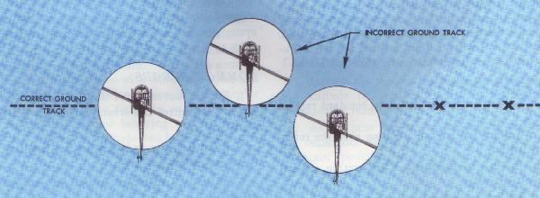
Figure 68.- Use of reference points in maintaining proper
ground track in sideward hovering flight.
HOVERING-REARWARD FLIGHT
Rearward hovering flight may be necessary to move the
helicopter to a specific area when the situation is such that forward or
sideward flight cannot be used. During the maneuver, constant groundspeed,
altitude, and heading should be maintained. That area behind the helicopter
must be carefully cleared before the maneuver is begun.
TECHNIQUE:
1. Before starting rearward flight, pick out two reference
points in front of, and in a line with the helicopter to help you maintain
proper ground track (fig. 69). The
movement of the helicopter should be such that these reference points remain
in a line.
2. Begin the maneuver from a normal hovering altitude
by applying rearward pressure on the cyclic stick. After movement has begun,
position the cyclic to maintain a slow groundspeed.
3. Throughout the maneuver, maintain constant
groundspeed and ground track with cyclic stick, constant heading with
pedals, and constant altitude with collective pith control, along with
throttle coordination, to maintain proper RPM.
4. To stop the rearward movement, apply forward cyclic
and hold it until the helicopter stops. As the motion stops, return the
cyclic stick to the neutral position. Also, as in the case of forward and
sideward flight, forward cyclic can be used to level the helicopter and let
it drift to a stop.
COMMON ERRORS:
1. Erratic movement of the cyclic stick, resulting in
overcontrol and an uneven movement over the surface.
2. Failure to use pedals properly, resulting in
excessive heading change.
3. Failure to maintain desired hovering altitude.
4. Failure to matain proper RPM.
5. Failure to make clearing turns prior to starting
the maneuver.
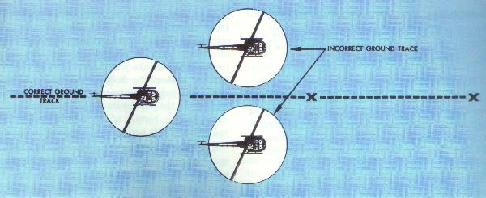
Figure 69.- Use of reference points in maintaining proper
ground track in forward or rearward hovering flight.
TAXIING
Taxiing is the intentional movement of the helicopter,
under its own power, while remaining in contact with the surface.
TECHNIQUE:
1. The helicopter should be in a stationary position on
the surface with the collective pitch full down, and the RPM the same as
that which is used for hover operations.
2. Move the cyclic slightly forward of the neutral
position and apply a gradual upward pressure on the collective pitch to
move the helicopter forward along the surface. Use pedals to mantain
ground track.
3. The collective pitch controls starting, stopping,
and rate of speed while taxiing. The higher the collective pitch, the
faster will be the taxi speed. Taxi at a speed no greater than that of a
normal walk.
4. During crosswind taxi, the cyclic should be held
into the wind a sufficient amount to eliminate any drifting movement.
5. Maintain proper RPM at all times.
COMMON ERRORS:
1. Improper use of cyclic stick - using the cyclic to
control starting, stopping, and rate of speed.
2. Failure to use pedals for heading control.
3. Improper use of controls during crosswind
operations.
4. Failure to maintain proper RPM.
NORMAL TAKEOFF FROM A HOVER
Takeoff from a hover is an orderly transition to
forward flight and is executed to increase altitude safely and expeditiously.
TECHNIQUE:
1. Bring the helicopter to a hover. Check engine and
control operation. Note the cyclic stick position to determine if the
aircraft is loaded properly. Check the manifold pressure required to hover
to determine the amount of excess power available.
2. Visually clear the area all around.
3. Smoothly and slowly ease the cyclic stick forward.
Apply just enough forward cyclic pressure to start the helicopter moving
forward over the surface (fig. 70).
4. As the helicopter starts to move forward,
increase collective pitch as necessary to prevent decending, and adjust
throttle to maintain RPM. The increase in power will require an increase
in left pedal to maintain heading. A straight takeoff path should be
maintained throughout the takeoff.
5. As you accelerate to effective translational lift,
the helicopter will begin to climb and the nose will tend to rise due to
increased lift. At this point adjust collective pitch to obtain normal
climb power and apply enough forward cyclic stick to overcome the tendency
of the nose to rise. Hold an attitude that will allow a smooth acceleration
toward climbing airspeed and a commensurate gain in altitude so that the
takeoff profile will not take you through any of the crosshatched area of
the height-velocity chart for the particular helicopter being flown. As
airspeed is increased, the streamlining of the fuselage reduces engine
torque effect, requiring a gradual reduction of left pedal.
6. As the helicopter continues to climb and airspeed
approaches normal climb speed, apply aft cyclic stick pressure to raise
the nose smoothly to normal climb attitude.
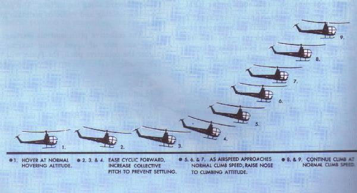
Figure 70.- Normal takeoff from a hover.
COMMON ERRORS:
1. Failing to use sufficient collective pitch to prevent
loss of altitude prior to attaining translational lift.
2. Adding power too rapidly at the beginning of the
transition from hovering to forward flight without forward cyclic
compensation, causing the helicopter to gain excessive altitude before
acquiring airspeed.
3. Assuming an extreme nose-down attitude near the
surface in the transition from hovering to forward flight.
4. Failing to maintain a straight flightpath over the
surface (ground track).
5. Failing to maintain proper airspeed during the
climb.
6. Failing to adjust the throttle to maintain proper
RPM.
Crosswind considerations during takeoffs
If a takeoff is made during crosswind conditions, the
helicopter is flown in a slip during the
early stages of the maneuver. The cyclic pitch is held into the wind a
sufficient amount to maintain the selected ground track for the takeoff, and
the heading is kept straight along the takeoff path using the antitorque
pedals (fig. 71). Thus, the ground
track and fuselage are aligned with each other. In other words, the rotor is
tilted into the wind so that the sideward movement of the helicopter is just
enough to counteract the wind drift. To prevent the nose from turning in the
direction of rotor tilt, it will be necessary to increase pedal pressure on
the side opposite to rotor tilt. The stronger the crosswind component, the
greater the amount of opposite pedal pressure required to maintain heading.
After approximately 50 feet of altitude is gained, a
heading (crab) into the wind (fig. 71)
should be established by a coordinated turn to maintain the desired ground
track. The stronger the crosswind component, the more the helicopter will
have to be turned into the wind to maintain the desired ground track. Once
straight-and-level flight on the desired heading is obtained, the pedals
should continue to be used as necessary to compensate for torque to keep the
helicopter in longitudinal trim.
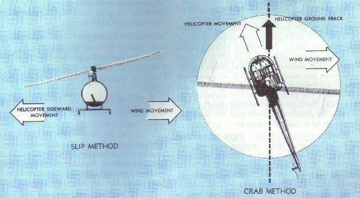
Figure 71.- Comparison of the slip method and crab
method of wind drift correction.
NORMAL TAKEOFF FROM THE SURFACE
Normal takeoff from the surface is used to move the
helicopter from a position on the surface into effective translational
lift and a normal climb using a minimum amount of power.
TECHNIQUE:
1. Place the helicopter in a stationary position on the
surface, lower the collective pitch to the full down position, and reduce
the RPM below operating RPM. Visually clear the area and select terrain
features or other objects to aid in maintaining the desired track during
the takeoff and climbout.
2. Increase the throttle to proper RPM and raise the
collective pitch slowly until the helicopter is light on the skids. Hesitate
momentarily and adjust cyclic and pedals as necassary to prevent any surface
movement.
3. Continue to apply upward collective pitch and, as
the helicopter breaks ground, use cyclic as necessary to assure forward
movement as altitude is gained.
4. Continue to accelerate the aircraft and, as
effective translational lift is attained, the helicopter will begin to
climb. Adjust attitude and power, if necessary, to climb in the same manner
as a takeoff from a hover.
COMMON ERRORS:
1. Departing the surface in an attitude that is too
nose-low. This situation requires the use of excessive power to initiate a
climb.
2. Using excessive power combined with too level an
attitude, which causes a vertical climb.
3. Too abrupt application of the collective pitch when
departing the surface, causing RPM and heading control errors.
STRAIGHT-AND-LEVEL FLIGHT
Straight-and-level flight in which a constant
attitude and heading are maintained. (The straight-and-level flight
attitude is the attitude of the helicopter necessary to maintain straight-
and-level flight. The level-flight attitude is the attitude of the
helicopter necessary to maintain altitude. These terms used throughout this
handbook.)
The airspeed is determined by the attitude of the
helicopter. The attitude of the helicopter is controlled by the movement
of the cyclic control stick; altitude is primarily maintained by use of the
collective pitch. To maintain forward flight, the rotor tip-path plane
must be tilted forward to obtain the necessary horizontal thrust component
from the main rotor. This will generally result in a nose - low attitude.
The lower the nose, the greater the power required to maintain altitude
(and the higher the resulting speed). Conversely, the greater the power
used, the lower nose must be to maintain altitude.
When in straight-and-level flight, an increase in
collective pitch while holding airspeed constant with the cyclic control
causes the helicopter to climb; a decrease in collective pitch while holding
airspeed constant causes a descent. A correction on the collective pitch
control requires coordinated correction on the throttle control in order to
maintain a constant RPM, and on the antitorque pedals to maintain heading
and to keep the helicopter in longitudinal trim. Coordinated flight should
be maintained (that is, neither slipping nor skidding).
To increase airspeed in straight-and-level flight,
apply forward pressure on the cyclic control stick and raise the collective
pitch as necessary to maintain altitude. To decrease airspeed, apply aft
pressure on the cyclic control stick and lower the collective pitch as
necessary to maintain altitude.
Although cyclic pitch control is sensitive, there is a
slight delay in control reaction and it will be necessary to anticipate
actual movement of the helicopter. In making cyclic corrections to control
the attitude or airspeed of a helicopter, care should be taken not to
overcontrol. If the nose of the helicopter rises above the level-flight
attitude, forward pressure is applied to the cyclic stick to bring the nose
down. If this correction is held to long the nose will drop too low. Since
the helicopter will continue to change attitude momentarily after the
controls reach neutral, return the cyclic stick control to neutral slighly
before the desired attitude is reached. This principle holds true for any
cyclic pitch control correction.
The helicopter is inherently unstable. If gusts or
turbulence cause the nose to drop, it will tend to continue dropping
instead of returning to a straight-and-level attitude as would a
fixed-wing aircraft. A pilot must remain alert and FLY the helicopter at
all times.
COMMON ERRORS:
1. Failure to trim properly, tending to hold pedal
pressure and opposite cyclic.
2. Failure to hold best airspeed. Aft cyclic pressure
dissipates airspeed without significant climb.
3. Failure to recognize proper control position for
maintaining crab-type drift correction.
TURNS
A turn is a mameuver used to change the heading of the
helicopter. the aerodynamics of a turn have been discussed previously-lift
components, loss of vertical lift, and load factors-and should be
throughly understood.
Before beginning any turn, the area in the direction
of the turn should be carefully cleared above, below, and at the flight
level. To enter a turn from straight-and-level flight, apply sideward
on the cyclic stick in the direction the turn is to be made. This is the
control movement necessary to start the turn. Do not use the pedals to
assist the turn. The pedals should be used to compensate for torque to keep
the helicopter in longitudinal trim. The more the cyclic stick is displaced,
the steeper the angle of bank; therefore, adjust the cyclic and maintain the
desired bank throughout the turn. Increase collective pitch and throttle as
necessary to maintain altitude and RPM, and increase left pedal pressure to
counteract the added torque effect and to maintain longitudinal trim.
Depending on degree of bank, additional forward cyclic pressure may be
required to maintain airspeed.
Recovery from the turn is the same as the entry except
that pressure on the cyclic stick is applied in the opposite direction.
Since the helicopter will continue to turn as long as there is any bank,
start the rollout before reaching the desired heading.
The discussion on level turns is equally applicable to
making turns while climbimg or descending, the only difference being that
the helicopter will be in a climbing or descending attitude rather than the
level flight attitude. If a simultaneous entry is desired, merely combine
the techniques of both maneuvers-climb or descent entry and turn entry.
Skids
A skid occurs when the helicopter slides sideways away
from the center of the the turn. It is caused by too much pedal pressure in
the direction of turn, or by too little in the direction opposite the turn
in relation to the amount of collective stick (power) used. If the
helicopter is forced to turn faster with increased pedal pressure instead of
by increasing the degree of bank, it will skid sideways away from the center
of turn. Instead of flying in its normal curved pattern, it will fly a
straighter course.
In a right climbing turn, if insufficient left pedal
is applied to compensate for increased torque effect, a skid will occur. In
a left climbing turn, if excessive left pedal is applied to compensate for
increased torque effect, a skid will occur.
In a right descending turn, if excessive right pedal
is applied to compensate for decreased torque, a skid will occur. In a left
descending turn, if insufficient right pedal is applied to compensate for
the decreased torque effect, a skid will occur.
A skid may also occur when flying straight-and-level
if the nose of the helicopter is allowed to move sudeways along the horizon.
This condition occurs when improper pedal pressure is held to counteract
torque and the helicopter is held level with cyclic control.
Slips
A slip occurs when the helicopter slides sideways
toward the center of the turn. It is caused by an insufficient amount of
pedal in the direction of turn (or too much in the direction opposite the
turn) in relation to the amount of collective stick (power) used. In other
words, if improper pedal pressure is held, keeping the nose from following
the turn, the helicopter will slip sideways toward the center of turn.
In a right climbing turn, if excessive left pedal is
applied to compensate for the increased torque effect, a slip will occur. In
a left climbing turn, if insufficient left pedal is applied to compensate
for the increased torque effect, a slip will occur.
In a right descending turn, if insufficient right
pedal is applied to compensate for the decreased torque effect, a slip will
occur. In a left descendind turn, if excessive right pedal is applied to
compensate for the decreased torque effect, a slip will occur.
A slip may also occur in straight-and-level flight if
one side of the helicopter is low and the nose is held straight by pedal
pressure. This is the technique used in correcting for a crosswind during an
approach and during a takeoff when at a low altitude.
Summarizing then, a skid occurs when the rate of turn
is too fast for the amount of bank being used; a slip occurs when the rate
of turn is too slow for slow for the amount of bank being used.
COMMON ERRORS;
1. Using pedal pressures for turns. This is usually not
necessary for small helicopters.
NORMAL CLIMB
The entry into a climb from a hover has already been
discussed under "Normal Takeoff From a Hover." This discussion will be
limited to a climb entry from crusing flight.
TECHNIQUE:
1. To enter a climb from cruising flight, apply aft cyclic
stick to obtain the approximate climb attitude; simultaneously increase
collective pitch to obtain climb manifold pressure, adjust throttle to
maintain or obtain climb RPM, and increase left pedal pressure to compensate
for the increased torque.
2. As the airspeed approaches normal climb airspeed,
make further adjustments of the cyclic control to obtain and hold this
airspeed.
3. Throughout the maneuver, maintain climb attitude,
heading, and airspeed with cyclic control, climb manifold pressure and RPM
with collective pitch and throttle, and longitudinal trim with antitorque
pedals.
4. To level off from a climb, start adjusting attitude
to the level flight attitude a few feet prior to reaching the desired
altitude. The amount of lead will depend upon the rate of climb at the time
of level-off--the higher the rate of climb, the more the lead. Apply forward
cyclic to adjust to and maitain the level flight attitude, which will be
slightly nose low; maintain climb power until airspeed approaches desired
cruising airspeed, at which time the collective should be lowered to obtain
cruising manifold pressure and throttle adjusted to obtain and maintain
cruising RPM. Throughout the level-off, maintain longitudinal trim and
constant heading with pedals.
COMMON ERRORS:
1. Failure to hold proper manifold pressure and airspeed.
2. Holding too much too little left pedal.
3. In level-off, decreasing power before lowering the
nose to cruising attitude.
NORMAL DESCENT
A normal descent is a maneuver in which the helicopter
loses altitude at a controlled rate while in a controlled attitude.
TECHNIQUE:
1. To establish a normal descent from straight-and-level
flight at cruising airspeed, lower collective pitch to obtain proper
manifold pressure, adjust throttle to maintain RPM, and increase right pedal
to maintain heading. If cruising airspeed is the same as, or slightly above
descending airspeed, simultaneously apply the necessary cyclic stick
pressure to obtain the approximate descending attitude. If cruising airspeed
is well above descending airspeed, the level flight attitude may be
maintained until airspeed approaches descending airspeed, at which time the
nose should be lowered to the descending attitude.
2. Throughout the maneuver, maintain descending
attitude and airspeed with the cyclic control, descending manifold pressure
and RPM with collective pitch and throttle, and heading with pedals.
3. To level off from the descent, lead the desired
altitude by an amount that will depend upon the rate of descent at the time
of level-off, for example, the higher the descent, the greater the lead. At
this point, increase collective pitch to obtain cruising manifold pressure,
adjust throttle to maintain RPM, increase left pedal pressure to maintain
heading, and adjust cyclic stick to obtain cruising airspeed and the
level-flight attitude as the desired altitude is reached.
COMMON ERRORS:
1. Failure to hold constant angle of descent (training
purposes only).
2. Failure to adjust pedal pressures for changes in
power.
APPROACHES
An approach is a transition maneuver in which the
helicopter is flown from traffic pattern altitude to a hover at normal
hovering altitude and with zero groundspeed. It is basically a power glide
made at an angle of descent corresponding to the type of approach that is
made.
A helicopter pilot should be proficient in performing
three basic types of approaches--normal, steep, and shallow--and should
know to analyze influential outside factors, and know how to plan an
approach to fit any particular situation. Choice of approach is governed by
the size of the landing area, barriers in the approach path, type of
surface, temperature, altitude, density altitude, wind direction, wind speed
and gross weight.
All approaches should be regarded as precision
approaches and should be made to a predetermined point. Rate of decent and
airspeed are indepedently controlled by the pilot. Therefore, little
tolerance should be given to overshooting a chosen landing spot, To maintain
a maximum margin of safety in each type of approach, effective translational
lift should be retained as long as practicable.
Factors to consider when making approaches
Evaluation of existing wind coditions must be made
before starting an approach. Although the approach is generally made into
the wind, conditions may indicate that entry will have to be made from a
downwind or crosswind position. The traffic pattern is generally flown at
normal or nearly normal airspeed. The velocity of the wind determines the
airspeed that will be maintained after the approach in initiated. Airspeed
should be increased in proportion to any increased wind velocity. Angle of
descent should remain constant, regardless of wind velocity.
Crosswind approaches are made by crabbing or slipping,
or by a combination of both. To make running landings in strong crosswinds,
it may be necessary to touch down initially with the windward (upwind) skid
to avoid drifting.
RPM should remain constant during all approaches. If
RPM is allowed to fluctuate or change abruptly, variations of torque forces
will cause the fuselage to yaw around the vertical axis and control will be
difficult. To maintain proper directional control, changes in RPM and/or
collective pitch setting must be made smoothly and must be accompanied by
appropriate changes in antitorque pedals.
NORMAL APPROACH TO A HOVER
A normal approach to a hover is basiclly a power glide
made at an angle of descent of approximately 10°
(fig. 72). This type of approach is used
in the majority of cases.
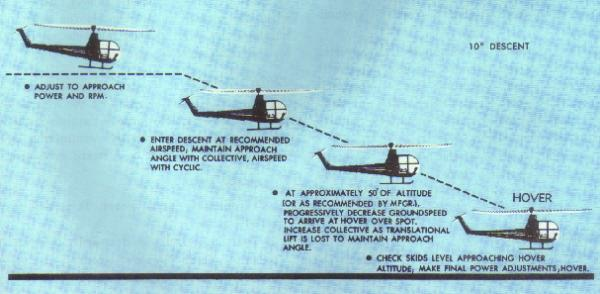
Figure 72.- Normal approach to a hover.
TECHNIQUE:
1. The entry to the downwind leg should be made at a
45° angle to the downwind leg so that the actual turn to the downwind
leg will be accomplished opposite the middle one-third of the runway. The
transition from downwind leg to the final approach led may be made by two
90° turns in which a defnite base leg is established, or by a 180°
turn. At all times during this transition, sufficient altitude should be
available so that in case of engine failure, an autorotative landing can be
completed into the wind. The point in the traffic pattern at which the power
reduction is made should be determined by this fact.
2. Initiate the approach by lowering the collective
pitch control the amount required to descend at an angle of approximately
10° on the final approach leg. As collective pitch is lowered, increase
right pedal as necessary to compensate for the change in torque reaction to
maintain heading, and adjust throttle to maintain proper RPM. Decelerate to
the approximate airspeed, then further adjust attitude as necessary to
maintain approach airspeed.
3. The angle of descent is primarily controlled by
collective pitch, the airspeed is primarily controlled by the cyclic
control, and heading on final approach is maintained with pedal control.
However, only by the coordination of all controls can the approach be
accomplished successfully.
4. The approach airspeed should be maintained until
the point on the approach is reached where, through evaluation of apparent
groundspeed, it is determined that forward airspeed must be progressessively
decreased in order to arrive at hovering altitude and attitude at the
intended landing spot with zero groundspeed.
5. As forward airspeed is gradually reduced by the
application of rearward cyclic, additional power (collective pitch) must be
applied to compensate for the decrease in translational lift and to maintain
the proper angle of descent. As collective pitch is increased, the left
pedal must be increased to maintain heading, throttle adjusted to maintain
RPM, and cyclic pitch coordinated to maintain the proper rate of closure to
the desired spot (a continual decrease in groundspeed).
6. The approach is terminated at hovering altitude
above the intended landing point with zero groundspeed. If power has been
properly applied during the final portion of the approach, very little
additional power should be required during the termination.
7. If the condition of the landing spot is unknown,
the approach may be terminated just short of the spot so that it can be
checked before moving forward for the landing.
COMMON ERRORS:
1. Failing to maintain proper RPM during the entire
approach.
2. Improper use of the collective pitch in conrolling
the angle of descent.
3. Failing to make pedal corrections to compensate for
collective pitch changes during the approach.
4. Failing to arrive at hovering altitude, hovering
attitude, and zero groundspeed almost simultaneously.
5. Low RPM in transition to the hover at the end of
the approach.
6. Using too much aft cyclic stick close to the
surface, which may result in tail rotor strikes.
Crosswind considerations in approaches
During the early stages of a crosswind approach, a
crab and/or a slip may be used(fig. 71).
During the final stages of an approach, beginning at approximately 50 feet
of altitude, a slip should be used to align the fuselage with the ground
track. The rotor is tilted into the wind (with cyclic pressure) enough so
that the sideward movement of the helicopter and the wind drift counteract
each other. Heading is maintained along the ground track with antitorque
pedals. (See "Crosswind
Considerations During Takeoffs.") This technique should be used on any
type of crosswind approach--shallow, normal, or steep.
NORMAL APPROACH TO THE SURFACE
When it is known or suspected that loose snow or dust
exists on your landing spot, an approach to the surface may be used. It may
also be used when the surface is unfavorable for a running landing, and high
density altitude or heavily loaded conditions exist.
TECHNIQUE:
The approach is the same as the normal approach to a
hover. However, the approach should be continued to touchdown, terminating
in a skids-level attitude with no forward movement.
COMMON ERRORS:
1. Terminating at a hover, then making a vertical landing.
2. Touching down with forward movement.
3. Approaching too slow, requiring the use of
excessive power during the termination.
4. Approaching too fast, causing a hard landing.
STEEP APPROACH TO A HOVER
A steep approach is used primarily when there are
obstacles in the approach path that are too high to allow a normal approach.
A steep approach will permit entry into most confined areas and is sometimes
used to avoid areas of turbulence around a pinnacle. An approach angle of
approximately 15° is normally used for steep approaches (fig. 73).
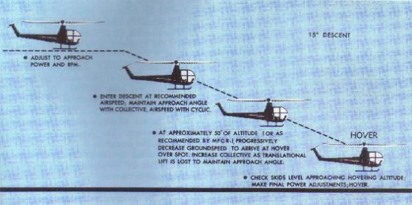
Figure 73.- Steep approach to a hover.
TECHNIQUE:
1. Entry is made in the same way as for a normal approach,
except that a greater reduction of collective pitch is usually required at
the beginning of the approach to start the descent than for a normal
approach. As collective pitch is lowered, increase right pedal to maintain
heading and adjust throttle to maintain RPM.
2. As in a normal approach, the angle of descent is
primarily controlled by collective pitch, and the speed is primarily
controlled by the cyclic control. However, only by the coordination of all
controls can the approach be accomplished successfully.
3. The approach airspeed should be maintained until
the point on the approach is reached where, through evaluation of apparent
groundspeed, it is determined that forward airspeed must be progressively
decreased in order to arrive at hovering altitude at intended landing spot
with zero groundspeed. This is very important since a flare should not be
made near the surface due to the danger of tail rotor strikes.
4. As forward airspeed is gradually reduced by the
application of rearward cyclic pressure, additional power (collective pitch)
must be applied to compensate for the decrease in translational lift and to
maintain proper angle of descent. As collective pitch is increased, left
pedal must be increased to maintain heading, throttle adjusted to maintain
RPM, and cyclic pitch coordinated to maintain the proper change in forward
airspeed.
5. Since the angle of descent on a steep approach is
much steeper than for a normal approach, the collective pitch must be used
much sooner at the bottom of the approach. The approach is terminated at
hovering altitude above the intended landing point with zero groundspeed.
If power has been properly applied during the final portion of the approach,
very little additional power should be required during the termination.
COMMON ERRORS:
1. Failing to maintain proper RPM during the entire
approach.
2. Improper use of collective pitch in controlling the
angle of descent.
3. Failing to make pedal corrections to compensate for
collective pitch changes during the approach.
4. Slowing airspeed excessively in order to remain on
the proper angle of descent.
5. Failing to arrive at hovering altitude, hovering
attitude, and zero groundspeed almost simultaneously.
6. Low RPM in transition to the hover at the end of
the approach.
7. Using too much aft cyclic stick close to the
surface, which may result in tail rotor strikes.
LANDING FROM A HOVER
In this maneuver, the helicopter is landed vertically
from a hover.
TECHNIQUE:
1. From a hover, begin a descent by applying a slow
but very gradual downward pressure on the collective pitch stick. This
smooth application of collective pitch should be such that a constant rate
of descent is maintained to the surface. As the skids desend within a few
inches of the surface, the ground effect becomes very noticeable and the
helicopter tends to stop its descent. At this point, it may be necessary to
further decrease the collective pitch stick a slight amount to maintain the
constant rate of descent.
2. When the skids tough the surface, lower the
collective pitch smoothly and firmly to the full down position, adjust the
throttle to keep RPM in the proper range, and at the same time add right
pedal as needed to maintain heading.
3. Throughout the descent and until the skids are
firmly on the surface and the collective pitch is in full down position,
make necessary corrections with pedals to maintain a constant heading, and
necessary corrections with the cyclic control to maintain a level attitude
(for existing load and wind conditins) and prevent movement over the surface.
COMMON ERRORS:
1. Overcontrolling the cyclic control during descent
resulting in movement over the surface on contact.
2. Failing to use collective pitch smoothly.
3. Pulling back on the cyclic stick prior to or upon
touchdown.
4. Failing to reduce the collective pitch smoothly and
positively to the full down position upon contact with the surface.
5. Failing to maintain a constant rate of descent.
6. Failing to maintain proper RPM.
SHALLOW APPROACH AND RUNNING
LANDING
A shallow approach and running landing (fig. 74) are used when a high density altitude
or a high gross weight condition or some combination thereof is such that a
normal or steep approach cannot be made because of insufficient power to
hover. To compensate for this lack of power, a shallow approach and running
landing makes use of translational lift until surface contact is made. The
glide angle is approximately 5°. Since a running landing follows a
shallow approach, a surface area of sufficient length and smoothness must
be available.
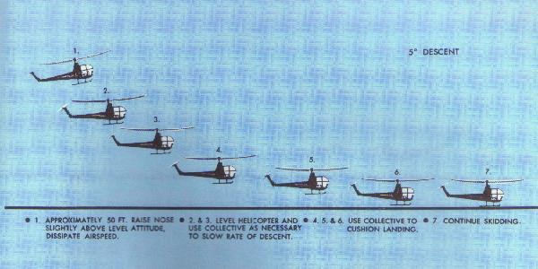
Figure 74.- Running landing.
TECHNIQUE:
1. A shallow approach is initiated in the same manner as a
normal approach except that a shallower angle of descent is maintained. The
power reduction to initiate the desired angle of descent will be less. As
collective pitch is lowered, maintain heading by increasing right pedal
pressure, adjust throttle to maintain RPM, and use cyclic as necessary to
maintain the desired approach airspeed.
2. As in normal and steep approaches, the angle of
descent and rate of descent are primarily controlled by collective pitch,
and the groundspeed is primarily controlled by the cyclic control. The
coordination of all controls is needed, however, if the approach is to be
accomplished successfully.
3. Approach airspeed should be maintained until an
altitude of approximately 50 feet above the surface has been reached. At
this point, gradually apply aft cyclic stick to start dissipating airspeed
and coordinate a slight downward pressure on collective pitch to maintain
the angle of descent. The deceleration of the airspeed should be enough so
that the helicopter will tend to descend to the surface due to the decreased
effect of translational lift just as the landing spot is reached. Since
translational lift diminishs rapidly at slow airspeeds, the deceleration
must be smoothly coordinated, at the same time keeping enough lift to
prevent the helicopter from settling abruptly.
4. On the final part of the approach, prior to making
surface contact, the helicopter should be placed in a level attitude with
cyclic control, pedals should be used as necessary so that the helicopter
and ground track are identical. Allow the helicopter to descend gently to
the surface in a straight-and-level attitude, cushioning the landing by
proper manipulation of the collective pitch.
5. After surface contact, the cyclic control should
be placed slightly forward of neutral to tilt the main rotor away from the
tail boom; antitorque pedals should be used to maintain heading; throttle
should be used to maintain RPM; and cyclic stick should be used to maintain
surface track. Normally, the collective pitch is held stationary after
touchdown until the helicopter comes to a complete stop. However, if
braking action is desired or required, the collective pitch may be lowered
cautiously. To ensure directioal control, normal rotor RPM must be
maintained until the helicopter stops.
COMMON ERRORS:
1. Assuming excessive nose-high attitude at approximtely
10 feet of altitude.
2. Insufficient collective pitch and throttle to
cushion landing.
3. Failing to add left pedal as collective pitch is
added to cushion landing, resulting in a touchdown while in a left skid.
4. Touching down at an excessive groundspeed for the
existing conditions (20 MPH groundspeed in most cases would be considered
maximum allowable).
5. Failing to touch down in a level attitude.
6. Failing to maintain proper RPM during and after
touchdown.
7. Poor directional control upon touchdown.
RUNNING TAKEOFF
A running takoff
(fig. 75) is used when conditons of load and/or density attitude
prevent a sustained hover at normal hovering altitude. It is often referred
to as a high-altitude takeoff. With insufficient power to hover, at least
momentarily or at a very low altitude, a running takeoff is not advisable.
No takeoff should be attempted if the helicopter cannot be lifted off the
surface momentarily at full power because:
1--If the helicopter cannot be hovered, its
performance is unpredictable.
2--If the helicopter cannot be raised off the surface
at all, sufficient power might not be available for a safe running takeoff.
A running takeoff may be accomplished safely only if
surface area of sufficient length and smoothness is available, and if no
barriers exist in the flightpath to interfere with a shallow climb.
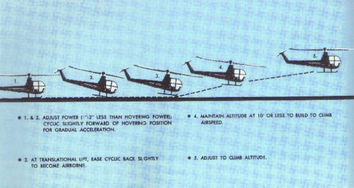
Figure 75.- High altitude (running) takeoff.
TECHNIQUE:
1. Head the helicopter into the wind.
2. Increase the throttle to obtain takeoff RPM.
3. Hold the cyclic stick slightly forward of the
hovering neutral position. Apply collective pitch slowly to accelerate into
forward movement. (During practice, a manifold pressure of 1 to 2 inches
below that which is required to hover may be used.)
4. Maintain a straight ground track with lateral
cyclic control and heading with antitorque pedals until a climb is
established.
5. As translational lift is gained, slight back
pressure on the cyclic stick will take the helicopter into airborne flight
smoothly, in a level attitude, with little or no pitching.
6. Maintain an altitude not to exceed 10 feet to allow
airspeed to increase toward normal climb speed and follow a climb profile
that will take you through the clear area of the height-velocity curve for
the particular helicopter.
7. During practice maneuvers, climb to 50 feet then
adjust power to normal climb power, and attitude to normal climb attitude.
COMMON ERRORS:
1. Failing to align heading and ground track to keep
surface friction to a minimum.
2. Attempting to pull the helicopter off the surface
before effectve translational is obtained.
3. Lowering the nose too much after becoming airborne
resulting in the helicopter settling back to the surface.
4. Failing to remain below approximately 10 feet of
altitude until airspeed approaches normal climb speed.
MAXIMUM PERFORMANCE TAKEOFF
A maximum performance take off is used to climb at a
steep angle to clear barriers in the flightpath
(fig. 76). It can be used when taking
off from small fields surrounded by high obstacles. Before attempting a
maximum performance takeoff, you must know thoroughly the capabilites and
limitations of your equipment. You must take into consideration the wind
velocity, temperature, altitude, density altitude, gross weight,
center-of-gravity location,and other factors affecting your technique and
the performance of the helicopter. To safely accomplish this type of
takeoff, sufficient power to hover must be available to prevent the
helicopter from sinking back to the surface after becoming airborne. This
maneuver will result in a steep climb, affording maximum altitude gain in a
minimum distance forward.
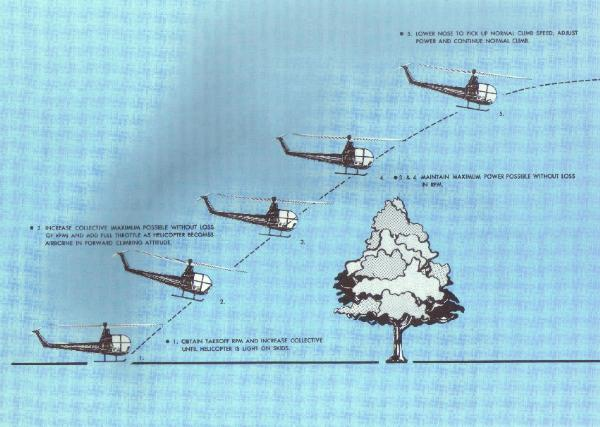
Figure 76.- Maximum performance takeoff.
The angle of climb for a maximum performance takeoff
will depend on existing conditions. The more critial the conditions--high
densinty altitude,calm winds, ect.--the shallower the angle of climb should
be. Use caution in climbing steeply. If the airspeed is allowed to get too
low, the helicopter may settle back to the surface. The height-velocity
(H/V) chart for the particular helicopter should be fully considered
before making any maximum performance takeoff. An engine failure at low
altitude and airspeed would place the helicopter in a dangerous position,
requiring a high degree of skill in making a autorotative landing. It may
be necessary to operate in the shaded area of the H/V diagram during the
beginning of this maneuver when operating in light or no-wind conditions.
The angle of climb and resultig airspeed will be dictated by the proximity
and height of the obstacles to be cleared. The pilot must be aware of the
calculated risk involved when operating in the shaded area of the H/V
diagram.
TECHNIQUE:
1. The helicopter should be headed generally into the wind
and the cyclic stick placed in what would be the neutral position for
hovering under the existing load and wind conditions. (This position could
be checked by hovering the helicopter momentarily prior to preparing to make
a maximum performance takeoff.)
2. Establish the proper RPM setting and apply
sufficient collective pitch to lighten the helicopter on its landing gear
(fig. 76). Apply the maximum amount of
collective pitch that can be obtained without reducing RPM and
simultaneously add full throttle (maximum pitch and full throttle may be
impractial or at least unnecessary on some helicopters, particulary on those
equipped with supercharged engines) and sufficient forward cyclic stick to
establish a forward climbing attitude as the helicopter leaves the surface.
Apply necessary antitorque pedal control to maintain heading. RPM must not
be sacrificed to obtain increased pitch on the rotor blades. If RPM starts
to decrease under full power condition, it can be regained only br reducing
collective pitch.
3. Utilize full power until the helicopter is clear of
all obstacles, after which a normal climb can be established and power
reduced.
COMMON ERRORS:
1. Nose too low initially causing horizontal flight rather
than more vertical flight.
2. Failure to maintain maximum permissible RPM.
3. Control movements too abrupt.
AUTOROTATIONS
In helicopter flying, an autorotation is a maneuver
that can be performed by the pilot whenever the engine is no longer
supplying power to the main rotor blades. A helicopter transmission is
designed to allow the main rotor to rotate freely in its original direction
if the engine stops. At the instant of engine failure, the blades will be
producing lift and thrust from their angle of attack and velocity. By
immediately lowering collective pitch (which must be done in case of engine
failure), lift and drag will be reduced, and the helicopter will begin an
immediate descent, thus producing an upward flow of air through the rotor
system. The impact of this upward flow of air on the rotor blades produces a
"ram" effect which provides sufficient thrust to maintain rotor RPM
throughout the descent. Since the tail rotor is driven by the main rotor
during autorotation, heading control can be maintained as in normal flight.
Several factors affect the rate of descent in
autorotation--air density (density altitude), gross weight, rotor RPM, and
airspeed. The pilot's primary control of the rate of descent is the
airspeed. Higher or lower airspeed is obtained with the cyclic control just
as in normal flight. A pilot has a choice in angle of descent varying from
vertical descent to maximum range (minimum angle of descent). Rate of
descent is high at zero airspeed and decreases to a minimum somewhere in the
neighborhood of 50 to 60 miles per hour, depending upon the particular
helicopter and the factors just mentioned. As the airspeed increases beyond
that which gives minimum rate of descent, the descent increases again. When
an autorotative landing is to be made, the energy stored in the rotating
blades can be used by the pilot to decrease the rate of descent and make a
safe landing. A greater amount of rotor energy is required to stop a
helicopter with a high rate of descent than is required to stop a helicopter
that is descending more slowly. It follows then that autorotative descents
at very low or very high airspeeds are more critical than those performed at
proper airspeed for the minimum rate of descent.
Each type of helicopter has a specific airspeed at
which a power-off glide is most efficient. The best airspeed is the one
which combines the most desirable (greatest) glide range with the most
desirable (slowest) rate of descent. The specific airspeed is somewhat
different for each type of helicopter, yet certain factors affect all
configurations in the same manner. For specific autorotation airspeeds for
a particular helicopter refer to the helicopter flight manual.
The specific airspeed for autorotations is established
for each type of helicopter on the basis of average weather and wind
conditions, and normal loading. When the helicopter is operated with
excessive loads in high density altitude or strong gusty wind conditions,
best performance is achieved from a slightly increased airspeed in the
descent. For autorotations in light winds, low density altitude, and light
loading, best performance is achieved from a slight decrease in normal
airspeed. Following this general procedure of fitting airspeed to existing
conditions, a pilot can achieve approximately the same glide angle in any
set of circumstances and estimate the touchdown point.
When making turns during an autorotative descent,
generally use cyclic control only. Use of antitorque pedals to assist or
speed the turn causes loss of airspeed and downward pitching of the
nose--especially when left pedal is used. When the autorotation is
initiated, sufficient right pedal pressure should be used to maintain
straight flight and prevent yawing to the left. This pressure should not be
changed to assist the turn.
If rotor RPM becomes too high during an autorotative
approach, collective pitch should be raised sufficiently to decrease RPM to
the normal operating range, then lowered all the way again. This procedure
may be repeated as necessary.
If the throttle has not been closed in practice autorotations, it will be
necessary to reduce it as collective pitch is raised; otherwise the engine
and rotor will reengage. After the collective is lowered, the throttle
should be readjusted to maintain a safe engine RPM.
RPM is most likely to increase above the maximum limit
during a turn due to the increased back cyclic stick pressure which induces
a greater airflow through the rotor system. The tighter the turn and the
heavier the gross wieght, the higher the RPM will be.
HOVERING AUTOROTATION
As the name implies, hovering autorotations are made
from a hover. They are practiced so that a pilot will automatically make the
correct response when confronted with engine stoppage or certain other
in-flight emergencies while hovering.
TECHNIQUE:
1. To practice hovering autorotations, establish a normal
hovering altitude for the particular helicopter being used, considering its
load and the atmospheric conditions, and keep the helicopter headed into the
wind. Hold maximum allowable RPM.
2. To enter autorotation, close the throttle quickly
to ensure a clean split of the needles. This disengages the driving force of
the engine from the rotor, thus eliminating torque effect. As the throttle
is closed, right pedal must be applied to maintain heading. Usually, a
slight amount of right cyclic stick will be necessary to keep the helicoper
from drifting to the left, but use cyclic control as required to ensure a
vertical descent and a level attitude. Leave the collective pitch where it
is on entry.
3. In helicopters with low inertia rotor systems, the
aircraft will begin to settle immediately. Keep a level attitude and ensure
a vertical descent with cyclic control, heading with pedals, and apply
upward collective pitch as necessary (generally the full amount is required)
to slow the descent and cushion the landing. As upward collective pitch is
applied, the throttle will have to be held in the closed position to prevent
the rotor from re-engaging.
4. In helicopters with high inertia rotor systems, the
aircraft will maintain altitude momentarily after the throttle is closed.
Then, as the rotor RPM decreases, the helicopter will start to settle. As it
settles, apply upward collective pitch (while holding the throttle in the
closed position) to slow the descent and cushion the landing. The timing of
this collective pitch applicatin, and the rate at which it should be
applied, will depend upon the particular helicopter being used, its gross
weight, and the existing atmospheric conditions. Cyclic control is used to
maintain a level attitude and to ensure a vertical descent. Heading is
maintained with pedals.
5: When the weight of the helicopter is entirely on
the skids, the application of upward collective pitch should cease. When the
helicopter has come to a complete stop, lower the collective pitch to the
full down position.
6. The timing of the collective pitch is a most
important consideration. If it is applied too soon, the remaining RPM may
not be sufficient to make a smooth landing. On the other hand, if collective
pitch is applied too late, surface contact may be made before sufficient
blade pitch is available to cushion the landing.
7. When entering the autorotation, the throttle should
be rotated to the closed or override position to prevent the engine from
re-engaging during the collective pitch application.
COMMON ERRORS:
1. Failing to use sufficient right pedal when power is
reduced.
2. Failing to stop all sideward or backward movement
prior to touchdown.
3. Failing to apply up-collective pitch properly,
resulting in a hard touchdown.
4. Failing to touch down in a level attitude.
NO-FLARE AUTOROTATION
A no-flare autorotation can be used when the selected
landing area is sufficiently long and smooth to permit a surface run.
Practice no-flare autororotations may be made as follows.
TECHNIQUE:
1. When the desired position to begin the autorotation has
been reached, place the collective pitch stick in the full-down position,
maintaining cruising RPM with throttle. Decrease throttle to ensure a clean
split of the needles and apply sufficient right pedal to maintain the
desired heading. After splitting the needles, readjust the throttle so as to
keep engine RPM well above normal idling speed but not high enough to cause
rejoining of the needles. (The manufacturer will often recommend the RPM to
use.)
2. Ajust attitude with cyclic control to obtain the
best gliding speed (slowest rate of desent). Be sure to hold collective
pitch in the full-down position. If is permitted to rise, rotor RPM will
decrease due to the increased drag from the increased pitch angle of the
blades. At approximately 50 feet above the surface (check the manufacturer's
recommendation for each helicopter), raise the nose slightly to obtain the
desired landing speed and to slow the rate of descent.
3. If a landing is to be made from the autorotative
approach, the throttle should be rotated to the closed or override position
at this time and held in this position as collective pitch is raised so that
the rotor will not re-engage. As the helicopter approaches normal hovering
altitude, maintain a landing attitude with cyclic control, maintain heading
with pedals, apply sufficient collective pitch (while holding the throttle
in the closed position) to cushion the touchdown, and be sure the helicopter
is landing parallel to its direction of motion upon contact with the
surface. Avoid landing on the heels of the skid gear. The timing of the
collective pitch application and the amount applied will be dependent on the
rate of descent.
4. After surface contact is made, collective pitch may
be increased (while holding the throttle in the closed position) to keep the
helicopter light on the skids and allow it to slow down gradually; or it may
be held stationary resulting in a shorter ground run; or it may be lowered
cautiously for additional bracking action, if required, due to a fast
touchdown and limited landing area. Cyclic control stick should be held
slightly forward of neutral and used to maintain groundtrack if landing is
made in a crosswind. Pedals should be used to maintain heading. In the event
insufficient pedal is available to maintain heading control as the rotor RPM
decreases after touchdown, cyclic control should be applied in the direction
of the turn.
5. After the helicopter has stopped, lower the
collective pitch to the full-down position.
6. If a power recovery is to be made from practice
autorotative approaches, the procedures in (3), (4), and (5) should be
replaced with the procedures given under
"Power Recovery From Practice
Autorotations."
COMMON ERRORS:
1. Failing to use sufficient right pedal when power is
reduced.
2. Lowering the nose too abruptly when power is
reduced, thus placing the helicopter in a dive.
3. Failing to maintain full-down-collective pitch
during the descent.
4. Application of up-collective pitch at an excessive
altitude resulting in a hard landing, loss of heading control, and possible
damage to the tail rotor and to the main rotor blade stops.
5. Pulling the nose up just prior to touchdown.
FLARE AUTOROTATION
A flare autorotation
(fig. 77) enables the pilot to land a helicopter at any speed between
that resulting in little or no landing run, up to that of a no-flare
autorotation; that is, anywhere between a zero groundspeed and the speed of
touchdown resulting from a no-flare autorotation. The speed at touchdown and
the resulting ground run will depend on the rate and amount of the
flare--the greater the degree of flare and the longer it is held, the slower
the touchdown speed and the shorter the ground run. The slower the speed
desired at touchdown, the more accurate must be the timing and speed of the
flare, especially in helicopters with low inertia rotor systems.
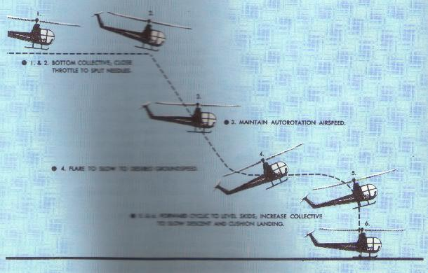
Figure 77.- Flare autorotation and touchdown.
TECHNIQUE:
1. Enter the autorotation in the same manner as the
no-flare autorotation. The technique is the same to the point at where the
flare is to begin. This point is slightly lower than the point at which the
nose is in the no-flare autorotation.
2. At approximately 35 to 60 feet above the surface,
depending on the helicopter (check the manufacturer's recommendation),
initate the flare by moving the cyclic stick to the rear. Heading is
maitained by the pedals. Care must be taken in the execution of the flare so
that the cyclic control is not moved rearward so abruptly as to cause the
helicopter to climb, nor should it be moved so slowly as to allow the
helicopter to settle so rapidly that the tail rotor might strike the
surface. As forward motion decreases to the desired groundspeed, move the
cyclic control forward to place the helicopter in preparation for landing
attitude. (If a landing is to be made, the throttle should be rotated to the
closed or override position at this time; if a power recovery is to be made,
it should be made as the helicopter reaches the landing attitude.)
3. The altitude at this time should be approximately
3 to 10 feet, depending upon helicopter being used. If a landing is to be
made, allow the helicopter to descend vertically. Apply collective pitch, as
necessary, to check the descent and cushion the landing. As collective pitch
is increased, hold the throttle in the closed position so the rotor will not
re-engage. Additional right pedal is required to maintain heading as
collective pitch is raised due to reduction in rotor RPM and resulting
reduced effect of the tail rotor.
4. After touchdown and after the helicopter has come
to a complete stop, lower the collective pitch to the full-down position.
COMMON ERRORS:
1. Failing to use sufficient right pedal when power is
reduced.
2. Lowering the nose too abruptly when power is
reduced, thus placing the helicopter in a dive.
3. Failing to maintain desired rotor RPM.
4 Application of up-collective pitch at an excessive
altitude resulting in a hard landing, loss of heading control, and possible
damage to the tail rotor and to the main rotor blade stops.
5. Pulling the nose up just prior to touchdown on full
autorotation.
POWER RECOVERY FROM PRACTICE AUTOROTATIONS
A power recovery is used to terminate practice
autorotations at a point prior to actual touchdown. After the power
recovery, a landing can be made or a go around initiated.
TECHNIQUE:
1. To make a power recovery after the flare or level-off
from an autorotation, coordinate upward collective pitch and increase
throttle to join the needles at operating RPM. The throttle and collective
pitch must be coordinated properly. If the throttle is increased too fast or
too much, an engine overspeed will occur; if throttle is increased too
slowly or too little in proportion to the increase in collective pitch, a
loss of rotor RPM will result. Use sufficient collective pitch to check the
descent and coordinate left pedal pressure with the increase in collective
pitch to maintain heading.
2. If a go-around is to be made, the cyclic control
should be moved forward to re-enter forward flight. If a landing is to be
made following the power recovery, the helicopter can be brought to a hover
at normal hovering altitude.
3. In transitioning from a practice autorotation to a
go-around, care must be exercised to avoid an altitude-airspeed combination
which would place the helicopter in an unsafe area of the height-velocity
chart for that particular helicopter.
COMMON ERRORS:
1. Initiating recovry too late requiring a rapid
application of controls, resulting in overcontroling.
2. Failing to obtain and maintain a level attitude
near the surface.
3. Adding throttle before collective pitch is applied.
4. Failing to coordinate throttle and collective
pitch properly, resulting in either an engine overspeed or a loss of RPM.
5. Failing to coordinate left pedal with the increase
in power.
RAPID DECELERATION OR QUICK STOP
Although used primarily for coordination practice,
decelerations (fig. 78) can be used to
make a quick stop in the air. The purpose of the manuever is to maintain a
constant altitude, heading, and RPM while slowing the helicopter to a
desired groundspeed. The maneuver requires a high degree of coordination of
all controls. It is practiced at an altitude that will permit a safe
clearance between the tail rotor and the surface throughout the maneuver,
especially at the point where the pitch attitude is highest. The altitude at
completion should be no higher than the maximum safe hovering altitude
prescribed by the manufacturer. In selecting an altitude at which to begin
the maneuver, the overall lengh of the helicopter and the height-velocity
chart must be considered.
Although the maneuver is called a rapid deceleration
or quick stop, this does not mean that it should be rushed to completion.
The rate of deceleration is at the discretion of the pilot. A quick stop is
completed when the helicopter comes to a hover during the recovery.
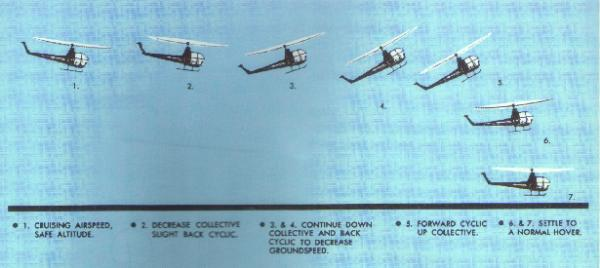
Figure 78.- Rapid deceleration or quick stop.
TECHNIQUE:
1. Begin the maneuver at a fast hover speed headed into
the wind at an altitude high enough to avoid danger to the tail rotor during
the flare but low enough to stay out of the height-velocity chart shaded
area throughout the performance. This altitude should be low enough that the
helicopter can be brought to a hover during the recovery.
2. The deceleration is initiated by applying aft
cyclic to reduce forward speed. Simultaneously, the collective pitch should
be lowered as necessary to counteract any climbing tendency. The timing must
be exact. If too little down collective is applied for the amount of aft
cyclic applied, a climb will result. If too much down collective is
applied for the amount of aft cyclic applied, a descent will result. A rapid
application of aft cyclic requires an equally rapid application of down
collective. As collective pitch is lowered, right pedal should be increased
to maintain heading and throttle should be adjusted to maintain RPM.
3 After speed has been reduced to the desired amount,
recovery is initiated by lowering the nose and allowing the helicopter to
descend to a normal hovering altitude in level flight and zero groundspeed.
During the recovery, collective pitch should be increased as necessary to
stop the helicopter at normal hovering altitude; throttle should be adjusted
to maintain RPM; and left pedal should be applied as necessary to maintain
heading.
COMMON ERRORS:
1. Initiating the maneuver by applying down collective.
2. Applying aft cyclic stick too rapidly initially,
causing the helicopter to "balloon" (a sudden gain in altitude).
3. Failing to effectively control the rate of
deceleration to accomplish the desired results.
4. Allowing the helicopter to stop forward motion in a
tail-low attitude.
5. Failing to maintain proper RPM.
SLOPE OPERATIONS
The approach to a slope is similar to the approach to
any other landing area. During slope operations, allowance must be made for
wind, barriers, and forced landing sites in case of engine failure. Since
the slope may constitute an obstruction to wind passage, turbulence and
downdrafts must be anticipated.
Slope landing
Usually, a helicopter should be landed on a
cross-slope rather than on an upslope. Landing downslope or downhill is not
recommended because of the possibility of striking the tail rotor on the
surface.
TECHNIQUE:
1. At the termination of the approach, move slowly toward
the slope, being careful not to turn the tail upslope. The helicopter should
be hovered in position cross-slope over the spot of intended landing (fig. 79).
2. A downward pressure on the collective pitch will
start the helicopter decending. As the upslope skid touches the ground,
apply cyclic stick in the direction of the slope. This will hold the skid
against the slope while the downslope skid is continuing to be let down with
the collective pitch.
3. As collective pitch is lowered, continue to move
the cyclic stick toward the slope to maintain a fixed position, and use the
cyclic as necessary to stop forward or aft movement of the helicopter. The
slope must be shallow enough to allow the pilot to hold the helicopter
against it with the cyclic stick during the entire landing. (A slope of
5° is considered maximum for normal operation of most helicopters. Each
make of helicopter will generally have its own peculiar way of indicating to
the pilot when lateral cyclic stick travel is about to run out; ie, the
rotor hub hitting the rotor mast, vibrations felt through the cyclic stick,
and others. A landing should not be made in these instances since this
indicates to the pilot that the slope is too steep.)
4. After the downslope skid is on the surface,
continue to lower the collective pitch full down. Normal operating RPM
should be maintained until the full weight of the helicopter is on the
skids. This will assure adequate RPM for immediate takeoff in case the
helicopter should start to slide down the slope. Pedals should be used as
necessary throughout the landing to maintain heading. Before reducing RPM,
move the cyclic stick as necessary to check the security of the helicopter.
COMMON ERRORS:
1. Failure to maintain proper RPM throughout the entire
maneuver.
2. Lowering the downslope skid too rapidly.
3. Applying excessive cyclic control into slope,
causing mast bumping.
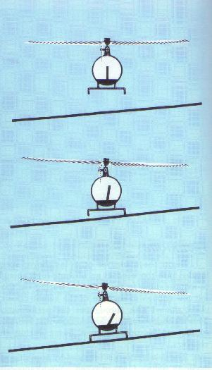
Figure 79.- Slope landing or takeoff.
SLOPE TAKEOFF
The procedure for a slope takeoff is almost the exact
reverse of that for a slope landing (fig.
79).
TECHNIQUE:
1. Adjust throttle to obtain takeoff RPM and move the
cyclic stick in the direction of the slope so that the rotor is parallel to
the true horizontal rather than the slope.
2. Apply up-collective pitch. As the helicopter
becomes light on the skids, apply pedal as needed to maintain heading.
3. As the downslope skid is rising and the helicopter
approaches a level attitude, move the cyclic stick back to the neutral
position, keeping the rotor disk parallel to the true horizon. Continue to
apply up-collective pitch and take the helicopter straight up to a hover
before moving away from the slope. In moving away from the slope, the tail
should not be turned upslope because of the danger of the tail rotor
striking the surface.
COMMON ERRORS:
1. Failure to adjust cyclic stick to keep the helicopter
from sliding downslope.
2. Failure to maintain proper RPM.
3. Holding excessive "upslope" cyclic stick as the
downslope skid is raised.
RECOVERY FROM LOW ROTOR RPM
Recovery from low rotor RPM is a procedure used to
return to the normal rotor operating RPM. This recovery procedure, if
performed properly, will normally regain lost rotor RPM while still
maintaining flight. A low rotor RPM condition is the result of having an
angle of attack on the main rotor blades (induced by too much upward
collective pitch) that has created a drag so great that engine power
available, or being utilized, is not sufficient to maintain normal rotor
operating RPM.
When a low rotor RPM condition is realized,
immediately lower the collective pitch. This action will decrease the angle
of attack of the main rotor blades which, because of reduced rotor drag,
will momentarily relieve excessive engine load. This action will also cause
the helicopter to settle because some lift will be lost. As the helicopter
begins to settle, smoothly raise the collective pitch just enough to stop
the settling motion. This procedure, under critical conditions, may have to
be repeated to regain normal rotor RPM or, if terrain permits, a landing may
be necessary to restore the RPM. When operating at sufficient altitudes
above the surface, however, it may be necessary to lower the collective
pitch only once to regain sufficient rotor RPM. The amount that the
collective pitch can be lowered will depend on the altitude available at the
time the low rotor RPM condition occurs. When hovering near the surface, the
collective pitch should be lowered cautiously to preclude hard contact with
the surface. When the RPM begins to increase and attains approximately
normal rotor operating RPM, anticipate decreasing the throttle slowly to
prevent the engine from overspeeding.
If recovery from a low rotor RPM condition is not made
soon enough, lifting power of the main rotor blades will be lost, including
pedal effectiveness. Pedal ineffectiveness occurs as a result of the loss of
tail rotor RPM because the tail rotor RPM is directly proportional to the
main rotor RPM. If pedal effectiveness is lost, and the altitude is such
that a landing can be made before the turning rate increases dangerously,
decrease collective pitch slowly, maintain a level attitude with cyclic
control, and land.
"S" TURNS
"S" turns present one of the elementary problems in
the practical application of the turn and in the correction for wind drift
in turns. The reference line used, whether a road, railroad, or fence,
should be straight for a considerable distance and should extend as nearly
perpendicular to the wind as possible.
The object of "S" turns is to fly a pattern of two
half circles of equal size on opposite sides of the reference line
(fig. 80). The maneuver should be
started at an altitude of 500 feet above the terrain and a constant altitude
maintained throughout the maneuver. "S" turns may be started at any point.
However, during early training, it may be beneficial to start on a downwind
heading. Entering downwind permits the immediate selection of the steepest
bank that is desired throughout the maneuver. The discussion that follows
is based on choosing a reference line that is perpendicular to the wind and
starting the maneuver on a downwind heading.
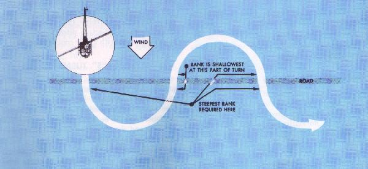
Figure 80.- "S" turns.
As the helicopter crosses the reference line, a bank
is immediately established. This initial bank will be the steepest used
throughout the maneuver since the helicopter is headed directly downwind.
The bank should be gradually reduced as necessary to describe a ground
track of a half circle. The turn should be timed so that, as the rollout is
compleleted, the helicopter is crossing the reference line perpendicular to
it and headed directly upwind. A bank is immediately entered in the opposite
direction to begin the second half of the "S." Since the helicopter is on
an upwind heading, this bank (and the one just completed before crossing the
reference line) will be shallowest in the maneuver. It should be gradually
increase as necessary to describe a ground track which is a half circle
identical in size to the one previously completed on the other side of the
reference line. The steepest bank in this turn should be attained just prior
to rollout (when the helicopter is approaching the reference line nearest to
a downwind heading). This bank, along with the initial bank entered at the
beginning of the maneuver, will be the steepest bank used in "S" turns. The
turn should be timed so that as the rollout is completed, the helicopter is
crossing the refence line perpendicular to it and again headed directly
downwind.
As a summary, the angle of bank required at any given
point in the maneuver is dependent on the groundspeed--the faster the
groundspeed, the steeper the bank; the slower the groundspeed, the shallower
the bank. Or, to express it another way, the more nearly the helicopter is
to a downwind heading, the steeper the bank; the more nearly it is to an
upwind heading, the shallower the bank.
In addition to varying the angle of bank to correct
for drift in order to maintain the proper radius of turn, the helicopter
must also be flown with a drift correction angle (crab) in relation to its
ground track, except of course, when it is on direct upwind or downwind
headings or there is no wind. One would normally think of fore and aft axis
of the helicopter as being tangent to the ground track pattern at each
point. However, this is not the case. During the turn on the upwind side of
the reference line (side from which the wind is blowing), the nose of the
helicopter will be crabbed toward the outside of the circle. During the turn
on the downwind side of the reference line (side of the reference line
oppposite to the direction from which the wind is blowing), the nose of the
helicopter will be crabbed toward the inside of the circle. In either case,
it is obvious that the helicopter is being crabbed into the wind just as it
is when trying to maintain a straight ground track. The amount of crab
depends upon the wind velocity and how nearly the helicopter is to a
crosswind position. The stronger the wind, the greater the crab angle at any
given position for a turn of a given radius. The more nearly the helicopter
is to a crosswind position, the greater the crab angle. The maximum crab
angle should be at the point of each half circle farthest from the reference
line.
A standard radius for "S" turns cannot be specified.
This radius will depend on the airspeed of the helicopter, the velocity of
the wind, and the initial bank chosen for entry.
Chapter 10
Table of Contents
Chapter 12